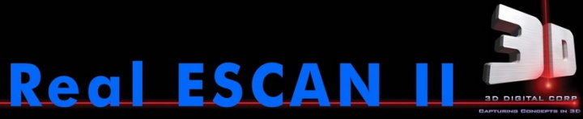
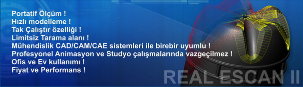
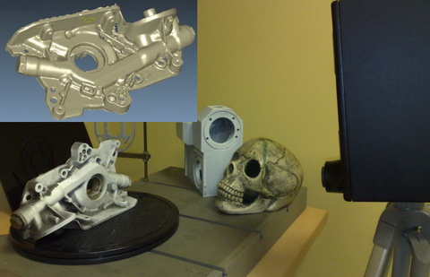
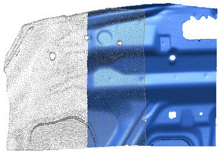
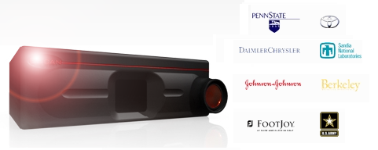
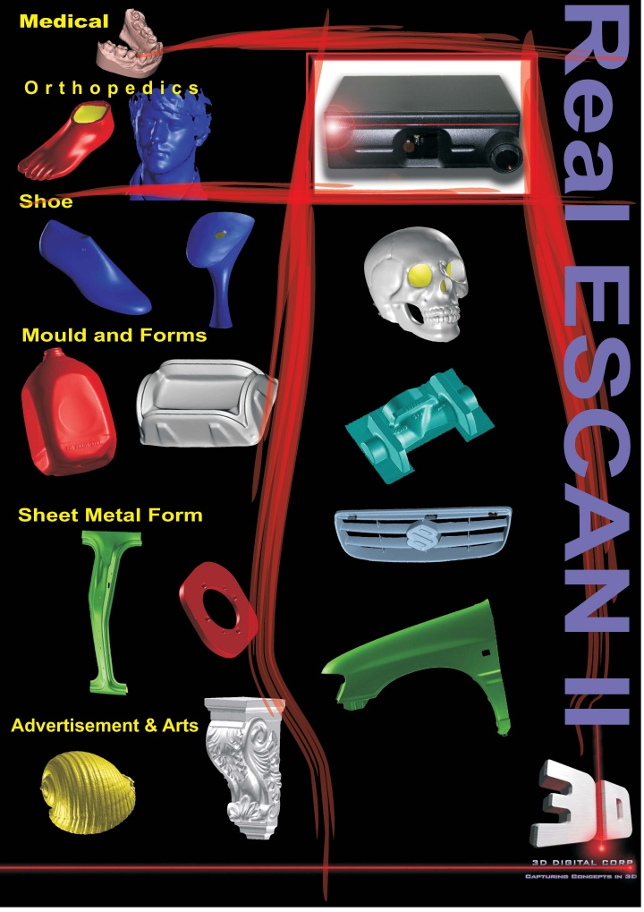
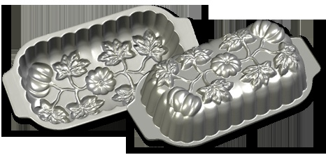
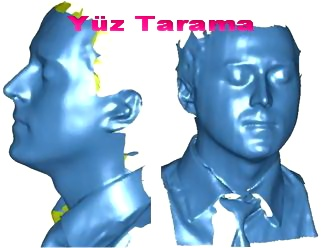

|
Tüm isteklerinizi tek bir üründe toplayabileceðiniz, ölçüm ve kopyalama için portatif tarayýcýnýz RealEScan II ile geleceðe, sýnýrsýz yeni bakýþ!..


Ýlk olarak 1997 yýlýnýn son çeyreðinde Türkiye'yi, (Home and Office Arm, step by dot scanner) ile tanýþtýran firmamýz, 10 yýl boyunca bu ürünü Türkiye marketine sunmuþ ve bir çok kullanýcýya digital manüel (temaslý) kopyalama mantýðýný aþýlamýþtýr. Firmamýz, 2008 yýlý son çeyreðinden bu yana, sektöründe içeriði ve fiyatý ile bir ilk olan "Home and office 3D Laser Scanner" ürünlerini sunmaktadýr.

RealEScan II sistemi tüm profesyonel tarama ihtiyaçlarýnýz için saðlam ve hesaplý bir seçimdir. Bu portatif, taþýnabilir ürün, 3D tarama ihtiyaçlarýnýzýn tümünü karþýlayabilir. Yýllardýr süren deneyimler ile geliþtirilen bu ürün, otomotiv, savunma ve Ar-Ge araþtýrmalarýnýzda ve diðer birçok sektörde yüksek hassasiyetli sonuçlar üretme kabiliyetine sahiptir.

Kullaným Alanlarý;
* Genel Kalýpçýlýk (Plastik, þiþirme, Kalýp revizyonlarý)
* Otomotiv (Döküm, Dövme, Plastik, Hacim kalýplarý)
* Ortopedi
* Ayakkabý tabaný ve Ökçe kalýplarý
* Medikal
* Mobilya -Dekorasyon
* Reklam - Medya - Animasyon
* Yatçýlýk / Gemi sektörü
* Müze, Tarihi eserler, iç mimari sektörü
3D DIGITAL Corp. hakkýnda;
Laser tarama konusunda uzun yýllar deneyimi olan ve bu gün firmanýn baþýnda bulunan Mr. Satish Mysore tarafýndan, 3D Corporation 1995 yýlýnda kurulmuþtur. Firma, uzun yýllar süren araþtýrmalarýnýn sonucu olarak 2000 yýlýnda tüm haklarý ile patentini aldýðý RealSCAN USB teknolojisini hayata geçirmiþtir. Son derece yüksek hassasiyetli, ama hesaplý kolay kullanýmlý ürünlerini (OPTIX ve RealEScan I ve II Serileri) ni dünya marketine kazandýrmýþtýr. Bu gün dünyada birçok firmaya 3DD LASER teknolojisini satan firma, dünyadaki bir çok markanýn iç yapýsal lazer teknolojilerinin mimarý olarak da bilinir.

Deðiþik opsiyonlara sahip olan ürünleri, Endüstrinin her alanýnda kullanýcý kitlesine sahiptir. Firma en son çýkardýðý REALESCAN ürününü Dünya ile birlikte ayný anda Türkiye'de satýþa sunmuþtur. Firmamýz aracýlýðý ile Türkiye marketine giren 3D DIGITAL Corp. Firmamýzla yaptýðý ortaklýk anlaþmasý ile, markette yüksek hassasiyetteki deðiþik ürünlerini, Makine - Kalýp Üretim, Ar-Ge, Ölçüm, Dizayn, Medya Film gibi sektörlerin hizmetine sunmuþtur.
Real ESCAN II - 3D lazer tarayýcý tanýtým videosu
RealEScan II Medikal uygulamalarý

Teknik Veriler; (Rscan Rev. software II USB 1.54 FW Update)
| Kamera Görüþ Açýsý |
40 derece |
| Lens |
Macro Manual lens |
| Standart Resolution / plane |
+/- 100 ~ 135 µm @ 300mm; +/- 180 ~ 210 µm @ 650mm |
| Ýdeal scanning plane Resolution |
+/- 150 µm @ 350mm; +/- 250 µm @ 500mm |
| Objeden Ýdeal Scan uzaklýðý |
300 mm - 650 mm / 0 - 10.000 mm Extend DOF- (0 - 10 Metre arasý algýlama alaný) |
| Nokta yoðunluðu /s |
255x1000 up to 255.000/s (saniyede 255.000 nokta) |
| Obje Tarama Alaný |
Minimum 24 x 18 cm / Maximum 40 x 55 cm |
| Büyük Obje Tarama |
Var. Limitsiz. Kaydýrmalý |
| Renk e göre Laser ayarý |
Var |
Software Control |
Software slider video gain control
Software scan limits control
Software limits number of scan lines
Z-range cutoff planes control |
| Yazýlým desteði |
RealSCAN USB - Tak çalýþtýr özelliði |
| Extra Yazýlým lisansý |
SLIM3D ve 3D Viewer / 3D SHAPE -Almanya (EXP. *.OBJ , *.STL, *.ASC) |
| Tripod |
Var |
* Automatic Rotary Table |
Var |
| * Scanner data yazýlýmý |
Var (Leios 2009 Standart / * Leios 2009 studio) - Ýtalya (Editing tools automatic nurbs surface)
|
| * Texture renkli Scan |
Var |
(*) yýldýzla belirtilen bölgeler opsiyoneldir. Notebook bilgisayarlý paket sisteme ayrýyetten ilave edilebilir.
(0.001" = 25 microns)
REALESCAN II NELER YAPABÝLÝR?
Laser tarayýcýlar, objelerin yüzeylerini tam olarak tararlar ve bu yüzeylere ait gerçek 3D verileri saðlarlar. Laser tarayýcýlar, otomotiv sanayinden akademik araþtýrmalara kadar geniþ bir ticari ve uygulama alanýnda kullanýlmaktadýr.
Müþterilerimiz, ABD Savunma Bakanlýðý, adli kurumlar, podiatristler ve özel tabanlý ayakkabý þirketleri ve ortopedistler ve yazýlým animasyon stüdyolarýndan oluþmaktadýr. Tarayýcýlarýmýzýn medikal alanda kullanýmýna kanserli tümörlerin, protezlerin 3D resimlerinin ve ameliyat esnasýnda beyin ve organlara ait 3D tasvirlerin elde edilmesi örnek verilebilir. Takýmlarýn ve kalýplarýn taranmasý, tersine mühendislik ve hýzlý prototipleme ise tarayýcýlarýn endüstriyel alanda kullanýmýna örnektir. Sanatçýlar ve müzeler dahi kopyalama ve arþivleme için tarayýcýlarýmýza ilgi göstermektedir. Ürünlerimizin tarama kabiliyetleri geniþ ve sýnýrsýzdýr.
NASIL ÇALIÞIRLAR?
Laser tarayýcýlar, laser üçgenleme prensibiyle çalýþýrlar. Tarayýcý lensi, laser ve taranan obje arasýnda bir üçgenleme yaparak doðru 3D veri elde edilebilir. Tarayýcý lensi ve laser (paralaks esaslý) arasýndaki mesafe bilinir ve galvanometre tarafýndan verilen laser açýsý yardýmýyla, obje yüzeyinin x, y, z koordinatlarýný elde etmek için gerekli tüm bilgi saðlanýr. Laseri yansýtan küçük bir aynayý döndüren galvanometre yardýmýyla, laser objeyi boydan boya süpürür. Sonrasýnda, objenin yüzeyi lense doðru odaklanýr ve tarayýcý içindeki CCD tarafýndan yakalanýr. Sonunda, yazýlýmýmýz sayesinde yoðun bir nokta bulutu üretilir.
Not: Kullanýlan laserler Class 1 veya Class 2 laserleridir. Class 1 laserleri göz saðlýðý açýsýndan emniyetliyken, Class 2 laserleri emniyetli deðildir ve göz temasýndan kaçýnýlmalýdýr.Endüstriyel kullaným amacýyla tasarlanmýþ 3D Digital Corp. tarayýcý modelleri, Class II tipi laser cihazlarýdýr.

RealScan USB ile 3D model oluþturma
RealScan USB yazýlýmý pmjx, pmh, obj ve stl dosyalarýný çýktý alabilir. Obj, pmh ve stl dosyalarý yüzey oluþturmak üzere 3 noktanýn birbirine baðlandýðý üçgenlenmiþ nokta bulutlarýyken; pmjx dosyasý ise bir nokta bulutudur.
Pmh dosyalarý, birleþtirme ve hizalama yazýlýmýmýz SLIM3D 'e özeldir. SLIM3D, taramalarý aralarýndaki benzer özellik tanýmlamalarýna baðlý olarak birleþtiren ve hizalayan, sonrasýnda taramalarý 3D model olarak kaydeden yazýlýmdýr.
Ayrýca pürüzsüzleþtirme, delikleri doldurma ve temiz bir model elde edilmesi için taramalarý süzer.
RealEScan II - otomobil modeli taramasý
|